Quantile Regression
Cheyenne Acevedo, Christine Albano, Ashley Eustis
November 2018
For those wishing to follow along with the R-based demo in class, click here for the companion R script for this lecture.
In this tutorial we provide an overview of quantile regression- a form of regression analysis that is used to estimate the conditional median or other quantiles of a response variable of interest.
# install.packages("quantreg")
# install.packages("Qtools")
# install.packages("ggplot2")
library(quantreg)
library(Qtools)
library(ggplot2)When to use Quantile Regression vs. Ordinary Least Squares Regression
# Simulate data
# generate some data to represent a dataset with a non-constant variance
x <- rep(1:195, 2) # our independent variable
b_0 <- 0 # intercept
b_1 <- 1 # slope
sigma <- 0.1 + 0.5*x # our non-constant variance
eps <- rnorm(x, mean = , sd = sigma)
y <- b_0 + b_1*x + eps
#plot the data to show heteroscedascity
plot(y~x)
From the scatterplot you can see that as x increases, y becomes more variable. This violates a key assumption of linear regression that there are normal errors with constant variance. Linear regression would have limited value for examining the relationship between our x and y, especially as x gets larger. If we did use linear regression here, we would see that it provides a good estimate for y when x is close to zero. However, as x increases, the mean of y given x becomes less meaningful.
Simple example of the rq() function in the quantreg package using simulated data
Reminder: Quantile regression models the relationship between the independent variable and the conditional mean for different quantiles of the dependent variable. Now we will use the quantile regression function rq. It is important to note that the rq() function just produces coefficient estimates and the summary() function is needed to evaluate the precision of the estimates. This allows us to examine whether covariates are significant at that particular quantile.
# OLS regression
# The standard OLS (Ordinary Least Squares) model explains the relationship between independent variables and the conditional mean of the dependent variable.
# Run OLS regression and get the output:
OLSreg <- lm(y~x)
summary(OLSreg)##
## Call:
## lm(formula = y ~ x)
##
## Residuals:
## Min 1Q Median 3Q Max
## -227.405 -29.031 0.912 24.196 198.785
##
## Coefficients:
## Estimate Std. Error t value Pr(>|t|)
## (Intercept) -3.47716 6.09477 -0.571 0.569
## x 1.03667 0.05393 19.223 <2e-16 ***
## ---
## Signif. codes: 0 '***' 0.001 '**' 0.01 '*' 0.05 '.' 0.1 ' ' 1
##
## Residual standard error: 59.95 on 388 degrees of freedom
## Multiple R-squared: 0.4878, Adjusted R-squared: 0.4865
## F-statistic: 369.5 on 1 and 388 DF, p-value: < 2.2e-16# Now we can build some quantile regression models for different quantiles
# estimate the model at the median (this is also known as the 2nd quantile)
qr1 <- rq(y ~ x) # our default tau is 0.50
summary(qr1) # get the output##
## Call: rq(formula = y ~ x)
##
## tau: [1] 0.5
##
## Coefficients:
## coefficients lower bd upper bd
## (Intercept) 0.62166 -0.22067 3.11693
## x 0.94944 0.87182 0.98767# Now lets fit a model for the remaining quantiles
# estimate the model for the first quartile
qr2 <- rq(y ~ x, tau = 0.25) # tau = 0.25 is the first quantile
summary(qr2) # get the output##
## Call: rq(formula = y ~ x, tau = 0.25)
##
## tau: [1] 0.25
##
## Coefficients:
## coefficients lower bd upper bd
## (Intercept) -0.24758 -5.80011 1.18703
## x 0.66691 0.62217 0.74525# estimate the model for the third quartile
qr3 <- rq( y~ x, tau = 0.75) # third quantile
summary(qr3) # get the output##
## Call: rq(formula = y ~ x, tau = 0.75)
##
## tau: [1] 0.75
##
## Coefficients:
## coefficients lower bd upper bd
## (Intercept) -0.85367 -2.00720 0.83762
## x 1.37785 1.33215 1.45218# estimate the model for the 95th quantile
Qreg95 <- rq(y~x, tau=0.95)
summary(Qreg95, se = "rank") # get the output##
## Call: rq(formula = y ~ x, tau = 0.95)
##
## tau: [1] 0.95
##
## Coefficients:
## coefficients lower bd upper bd
## (Intercept) -2.08063 -3.31586 -1.38067
## x 1.93970 1.87679 1.98568Plotting results
# plot the data
plot(x,y, type = "n")
points(x,y,cex=.5,col="blue") # add the data points
taus <- c(.05,.1,.25,.75,.9,.95) # choose the quantiles you want to plot
f <- coef(rq((y)~(x),tau=taus)) # make your coefficents from your quantile model
xx <- seq(min(x),max(x),190) # sequence the min and max values
yy <- cbind(1,xx)%*%f
for(i in 1:length(taus)){ # loop through your quantile values to make a line for each quantile
lines(xx,yy[,i],col = "gray") # this will show the slope of th eline for each quantile
}
abline(lm(y ~ x),col="red",lty = 2) # plot the mean Least Squares Estimate fit line
abline(rq(y ~ x), col="blue") # plot the meadian
legend("topleft",legend = c("mean (LSE) fit", "median (LAE) fit"), col = c("red","blue"),lty = c(2,1)) # make the legend!
The above scatterplot from the simulated data shows the relationship between our dependent variable (y) and our independent variable (x). The gray lines are for the 5th, 10th, 50th, 75th, 90th and 95th quantile regression and the linear regression coefficient estimates. The solid blue line is the median fit. The red dashed line is the least squares estimate of the conditional mean function. The intercept estimate doesn’t change much, but the slopes for each quantile increase.
Plotting Model Coefficients by Quantile
#Example of plotting of coefficients and their confidence bands
plot(summary(rq(y~x,tau = 1:49/50))) The solid red line is the OLS regression coefficient and the dashed red lines are the confidence intervals around the OLS. Each black dot is the slope coefficient for the quantile indicated on the x-axis. The light gray area around the black dots is the confidence interval around the quantile. The lower quantiles have significant difference below the OLS and the upper quantiles have significant difference above the OLS.
The solid red line is the OLS regression coefficient and the dashed red lines are the confidence intervals around the OLS. Each black dot is the slope coefficient for the quantile indicated on the x-axis. The light gray area around the black dots is the confidence interval around the quantile. The lower quantiles have significant difference below the OLS and the upper quantiles have significant difference above the OLS.
Comparing quantiles with ANOVA
If we want to test that the slopes were the same at two or more quantiles, then we need to use anova. Before you do this you need to have computed summary statistics for two or more quantile regression fits (We did this above).
Anova allows us to compute test statistics for two or more quantiles regression fits, and determines whether covariates are significant at particular quantiles.
# use anova to compare the 1st and 3rd quantiles
anova(qr2, qr3)## Quantile Regression Analysis of Deviance Table
##
## Model: y ~ x
## Joint Test of Equality of Slopes: tau in { 0.25 0.75 }
##
## Df Resid Df F value Pr(>F)
## 1 1 779 141.69 < 2.2e-16 ***
## ---
## Signif. codes: 0 '***' 0.001 '**' 0.01 '*' 0.05 '.' 0.1 ' ' 1# compare the 1st, 2nd, and 3rd quantiles
anova(qr1, qr2, qr3)## Quantile Regression Analysis of Deviance Table
##
## Model: y ~ x
## Joint Test of Equality of Slopes: tau in { 0.5 0.25 0.75 }
##
## Df Resid Df F value Pr(>F)
## 1 2 1168 72.57 < 2.2e-16 ***
## ---
## Signif. codes: 0 '***' 0.001 '**' 0.01 '*' 0.05 '.' 0.1 ' ' 1Comparing nested models with ANOVA
# Let's use the Barro Data to explore quantile regression models with a larger dataset with more covarites.
# This is a regression data set consisting of 161 observations on determinants of cross country GDP growth rates with 14 covariates.
data(barro) # load the Barro Data
# ?barro # for more info on this data
names(barro)## [1] "y.net" "lgdp2" "mse2" "fse2" "fhe2" "mhe2" "lexp2"
## [8] "lintr2" "gedy2" "Iy2" "gcony2" "lblakp2" "pol2" "ttrad2"# our dependent variable is "y.net" the Annal Change Per Capita GDP
# our independent variables are everything else
# Now let's build a nested model where we compare the effect of Initial Per Capita GDP (lgdp2), Female Secondary Education (fse2), and Education/GDP (gedy2) with our dependent variable (Annual Change Per Capita GDP)
# estimate this model for the 2nd quantile (or the meadian)
fit0 <- rq(y.net ~ lgdp2 + fse2 + gedy2 , data = barro)
summary(fit0) # the default is the meadian since we didn't specify tau##
## Call: rq(formula = y.net ~ lgdp2 + fse2 + gedy2, data = barro)
##
## tau: [1] 0.5
##
## Coefficients:
## coefficients lower bd upper bd
## (Intercept) -0.00747 -0.03006 0.04209
## lgdp2 0.00465 -0.00309 0.00725
## fse2 0.00159 -0.00162 0.00947
## gedy2 -0.36620 -0.55943 0.17807# Let's build another nested model where we compare the effect of Initial Per Capita GDP (lgdp2), Female Secondary Education (fse2), Education/GDP (gedy2), Investment GDP (Iy2), and Public Consumption/GDP (gcony2) with our dependent variable (Annual Change Per Capita GDP)
fit1 <- rq(y.net ~ lgdp2 + fse2 + gedy2 + Iy2 + gcony2, data = barro)
summary(fit1) # this model will also output the 2nd quantile##
## Call: rq(formula = y.net ~ lgdp2 + fse2 + gedy2 + Iy2 + gcony2, data = barro)
##
## tau: [1] 0.5
##
## Coefficients:
## coefficients lower bd upper bd
## (Intercept) 0.12501 0.05563 0.16746
## lgdp2 -0.01510 -0.02077 -0.00527
## fse2 0.00439 0.00189 0.00927
## gedy2 -0.19698 -0.50469 0.16207
## Iy2 0.14906 0.08542 0.20689
## gcony2 -0.14366 -0.26171 -0.02612# Now compare the two models
anova(fit1,fit0) ## Quantile Regression Analysis of Deviance Table
##
## Model 1: y.net ~ lgdp2 + fse2 + gedy2 + Iy2 + gcony2
## Model 2: y.net ~ lgdp2 + fse2 + gedy2
## Df Resid Df F value Pr(>F)
## 1 2 155 18.879 4.596e-08 ***
## ---
## Signif. codes: 0 '***' 0.001 '**' 0.01 '*' 0.05 '.' 0.1 ' ' 1Multiple quantile regression example (Barro)
# Still using the barro data
# Let's examine different quantiles from our second nested model above
# estimate the model for the third quantile
fit2 <- rq(y.net ~ lgdp2 + fse2 + gedy2 + Iy2 + gcony2, data = barro,tau=.75)
summary(fit2) # this model gives us the output for the 3rd quantile because we specified tau as 0.75##
## Call: rq(formula = y.net ~ lgdp2 + fse2 + gedy2 + Iy2 + gcony2, tau = 0.75,
## data = barro)
##
## tau: [1] 0.75
##
## Coefficients:
## coefficients lower bd upper bd
## (Intercept) 0.13103 0.09312 0.16521
## lgdp2 -0.01489 -0.01898 -0.01012
## fse2 -0.00026 -0.00148 0.00425
## gedy2 0.00400 -0.30995 0.45653
## Iy2 0.14527 0.10049 0.19170
## gcony2 -0.13505 -0.19123 -0.02922# estimate the model for the first quantile
fit3 <- rq(y.net ~ lgdp2 + fse2 + gedy2 + Iy2 + gcony2, data = barro,tau=.25)
summary(fit3) # this model outpus the 1st quantile##
## Call: rq(formula = y.net ~ lgdp2 + fse2 + gedy2 + Iy2 + gcony2, tau = 0.25,
## data = barro)
##
## tau: [1] 0.25
##
## Coefficients:
## coefficients lower bd upper bd
## (Intercept) 0.06086 0.02271 0.16148
## lgdp2 -0.00884 -0.02255 -0.00446
## fse2 0.00246 0.00081 0.00902
## gedy2 -0.14962 -0.54266 0.26080
## Iy2 0.15592 0.09664 0.21300
## gcony2 -0.15862 -0.26571 -0.03083# Test whether the coefficients are significantly different for the quantiles using ANOVA
# remember: use the anova function after you have computed test statistics for two or more quantile regression fits
# Now compare the two quantiles
anova(fit2,fit3) ## Quantile Regression Analysis of Deviance Table
##
## Model: y.net ~ lgdp2 + fse2 + gedy2 + Iy2 + gcony2
## Joint Test of Equality of Slopes: tau in { 0.75 0.25 }
##
## Df Resid Df F value Pr(>F)
## 1 5 317 2.7904 0.0175 *
## ---
## Signif. codes: 0 '***' 0.001 '**' 0.01 '*' 0.05 '.' 0.1 ' ' 1# lets compare the 1st, 2nd and 3rd quantiles
anova(fit1,fit2,fit3,joint=FALSE) ## Quantile Regression Analysis of Deviance Table
##
## Model: y.net ~ lgdp2 + fse2 + gedy2 + Iy2 + gcony2
## Tests of Equality of Distinct Slopes: tau in { 0.5 0.75 0.25 }
##
## Df Resid Df F value Pr(>F)
## lgdp2 2 481 1.0656 0.34535
## fse2 2 481 2.6398 0.07241 .
## gedy2 2 481 0.7862 0.45614
## Iy2 2 481 0.0447 0.95632
## gcony2 2 481 0.0653 0.93675
## ---
## Signif. codes: 0 '***' 0.001 '**' 0.01 '*' 0.05 '.' 0.1 ' ' 1# Alternatively, fitting can be done in one call:
fit <- rq(y.net ~ lgdp2 + fse2 + gedy2 + Iy2 + gcony2, method = "fn", tau = 1:4/5, data = barro)
summary(fit) # this looks that the 20th, 40th, 60th, and 80th percentiles##
## Call: rq(formula = y.net ~ lgdp2 + fse2 + gedy2 + Iy2 + gcony2, tau = 1:4/5,
## data = barro, method = "fn")
##
## tau: [1] 0.2
##
## Coefficients:
## coefficients lower bd upper bd
## (Intercept) 0.08961 0.01263 0.18331
## lgdp2 -0.01353 -0.02193 -0.00442
## fse2 0.00640 0.00082 0.01099
## gedy2 -0.17913 -0.63151 0.27242
## Iy2 0.17935 0.07162 0.21062
## gcony2 -0.17463 -0.26228 -0.03154
##
## Call: rq(formula = y.net ~ lgdp2 + fse2 + gedy2 + Iy2 + gcony2, tau = 1:4/5,
## data = barro, method = "fn")
##
## tau: [1] 0.4
##
## Coefficients:
## coefficients lower bd upper bd
## (Intercept) 0.08563 0.05458 0.14135
## lgdp2 -0.01143 -0.02061 -0.00649
## fse2 0.00552 -0.00077 0.00669
## gedy2 -0.22571 -0.42905 0.27365
## Iy2 0.15339 0.09836 0.18022
## gcony2 -0.10467 -0.23439 -0.04114
##
## Call: rq(formula = y.net ~ lgdp2 + fse2 + gedy2 + Iy2 + gcony2, tau = 1:4/5,
## data = barro, method = "fn")
##
## tau: [1] 0.6
##
## Coefficients:
## coefficients lower bd upper bd
## (Intercept) 0.11733 0.07871 0.17083
## lgdp2 -0.01355 -0.02145 -0.00914
## fse2 0.00226 0.00095 0.00684
## gedy2 -0.13172 -0.43128 0.20007
## Iy2 0.14351 0.09458 0.18621
## gcony2 -0.12887 -0.23311 -0.03235
##
## Call: rq(formula = y.net ~ lgdp2 + fse2 + gedy2 + Iy2 + gcony2, tau = 1:4/5,
## data = barro, method = "fn")
##
## tau: [1] 0.8
##
## Coefficients:
## coefficients lower bd upper bd
## (Intercept) 0.13637 0.10915 0.18545
## lgdp2 -0.01557 -0.02155 -0.01196
## fse2 -0.00017 -0.00255 0.00595
## gedy2 0.01005 -0.23406 0.41058
## Iy2 0.14504 0.08562 0.19427
## gcony2 -0.08853 -0.22945 -0.03840plot(summary(fit)) # see what it looks like
Alternatives for calculating Standard Errors
Standard errors and p-values for slope estimates are not usually generated automatically in the summary.rq function for “bigger” problems. Thus, you often need to specify that you want this output. There are several options, some of which are based on assumptions about data distribution, and others of which are not. Ultimately, Hao and Naiman 2007 recommend the bootstrap method as it does not require any a-priori assumptions of the data distributions.
iid - conditional distributions are independent and identically distributed (iid).
Location shift model, where changes among the different QRs show up only in the intercept.
# iid - conditional distributions are independent and identically distributed (iid).
# generate data with constant variance
x <- seq(0,100,length.out = 100) # independent variable
int <- 6 # true intercept of mean
slope <- 0.1 # true slope
set.seed(1) # make the next line reproducible
e <- rnorm(100,mean = 0, sd = 5) # normal random error with constant variance
y <- int + slope*x + e # dependent variable
dat <- data.frame(x,y) # make into datafame
plot(dat$x, dat$y) # plot data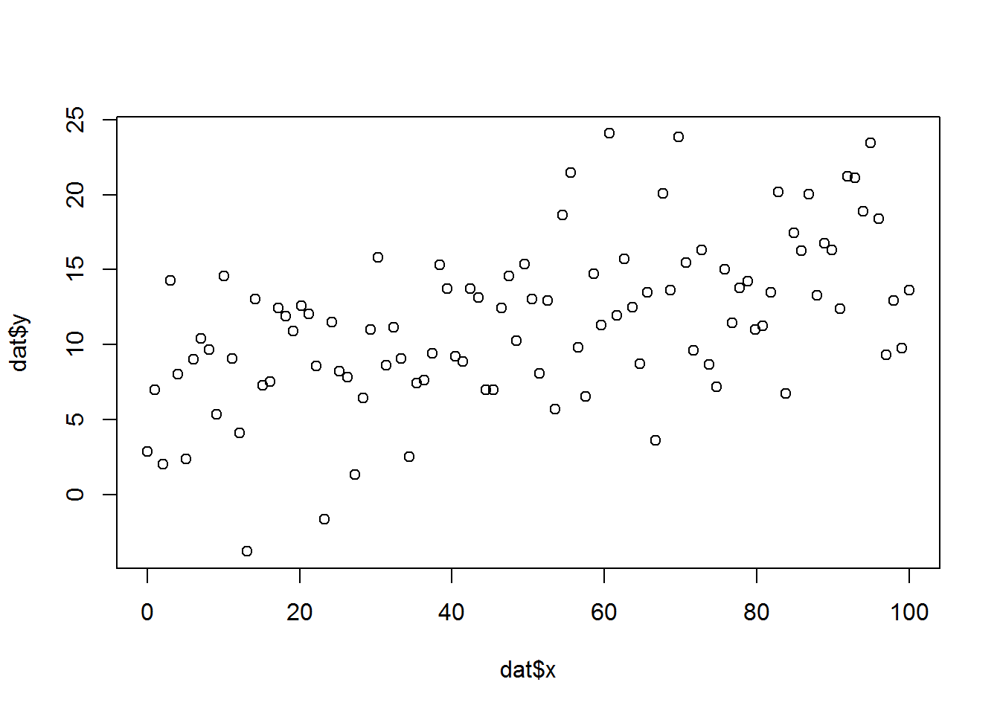
# note that summary gives confidence intervals but not standard errors
summary(rq(y~x, tau=c(0.1, 0.5, 0.9)))##
## Call: rq(formula = y ~ x, tau = c(0.1, 0.5, 0.9))
##
## tau: [1] 0.1
##
## Coefficients:
## coefficients lower bd upper bd
## (Intercept) 1.86238 -3.66174 2.83085
## x 0.07994 0.06152 0.16305
##
## Call: rq(formula = y ~ x, tau = c(0.1, 0.5, 0.9))
##
## tau: [1] 0.5
##
## Coefficients:
## coefficients lower bd upper bd
## (Intercept) 6.92531 4.79222 9.18450
## x 0.09297 0.05043 0.12938
##
## Call: rq(formula = y ~ x, tau = c(0.1, 0.5, 0.9))
##
## tau: [1] 0.9
##
## Coefficients:
## coefficients lower bd upper bd
## (Intercept) 11.54926 9.71369 13.92503
## x 0.10533 0.07774 0.15515# add SE option to statement
#iid - assumes iid distribution
plot(summary(rq(y~x, tau=c(0.1, 0.5, 0.9)), se="iid"))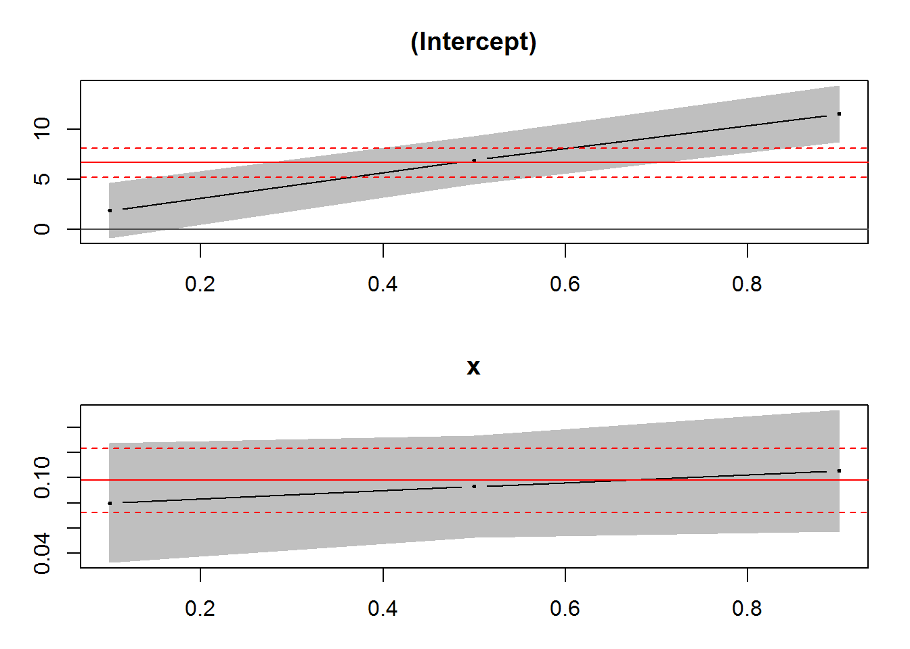
#nid - assumes non-identical conditional distribution
plot(summary(rq(y~x, tau=c(0.1, 0.5, 0.9)), se="nid"))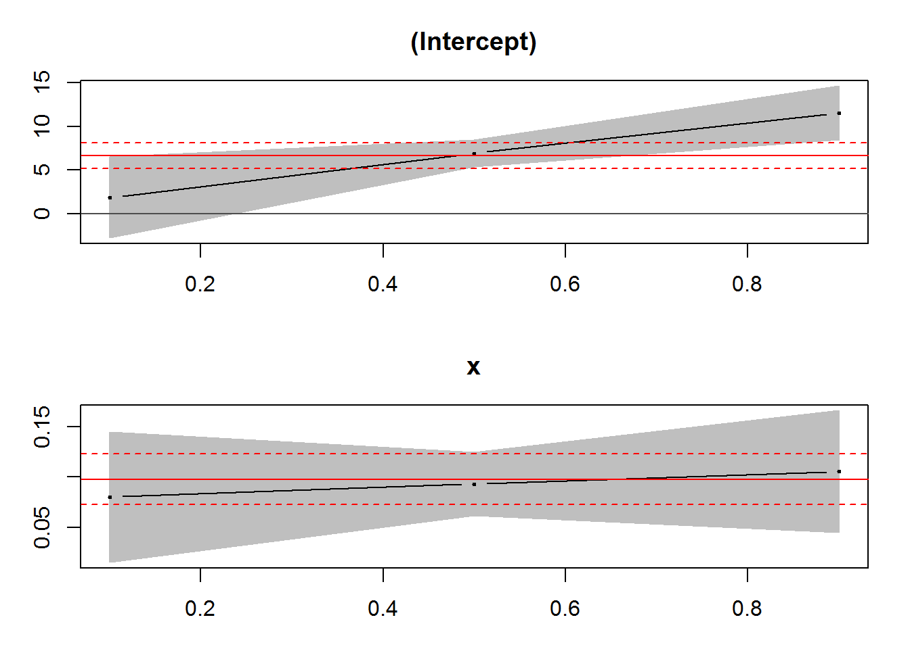
#boot - no distribution assumption. Note that this is most similar to the iid, which is the appropriate choice for data with this distribution
plot(summary(rq(y~x, tau=c(0.1, 0.5, 0.9)), se="boot"))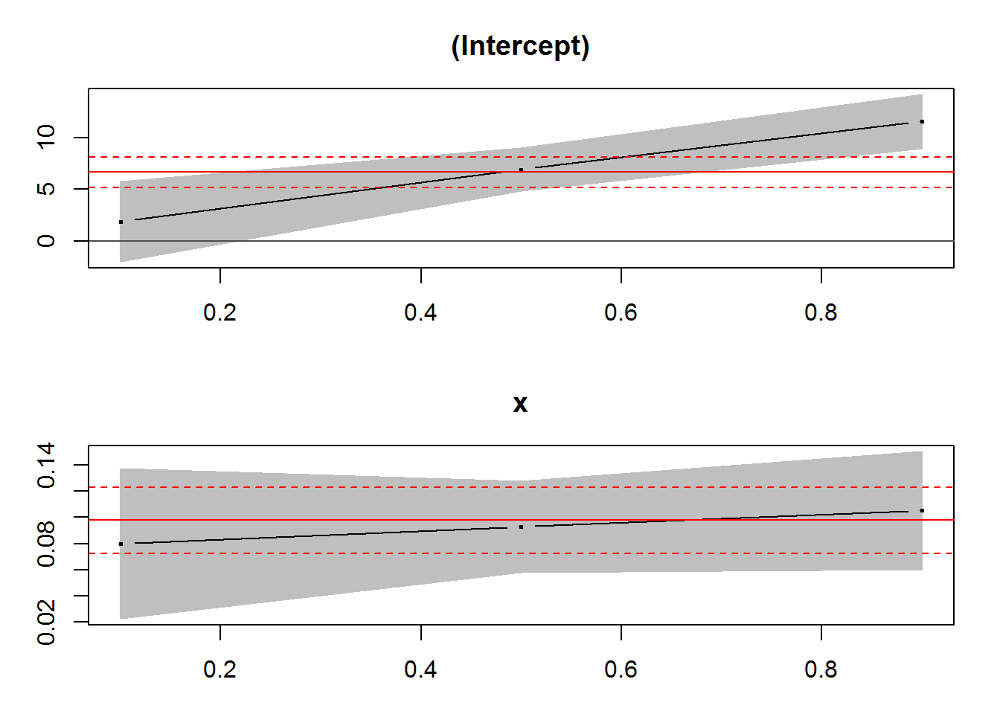
nid - non-identical conditional distributions (nid.):
the error densities have the same shape but differ from one another in dispersion.This is the location and scale shift model, where QRs vary in both intercepts and slopes. Use for heteroscedastic data
# generate data with non-constant variance (adapted from https://data.library.virginia.edu/getting-started-with-quantile-regression/)
#generate data with nonconstant variance
x <- seq(0,100,length.out = 100) # independent variable
varfunc <- 0.1 + 0.1*x # non-constant variance
int <- 6 # true intercept
slope <- 0.1 # true slope
set.seed(1) # make the next line reproducible
e <- rnorm(100,mean = 0, sd = varfunc) # normal random error with non-constant variance
y <- int + slope*x + e # dependent variable
dat <- data.frame(x,y) # make into datafame
plot(dat$x, dat$y) # plot data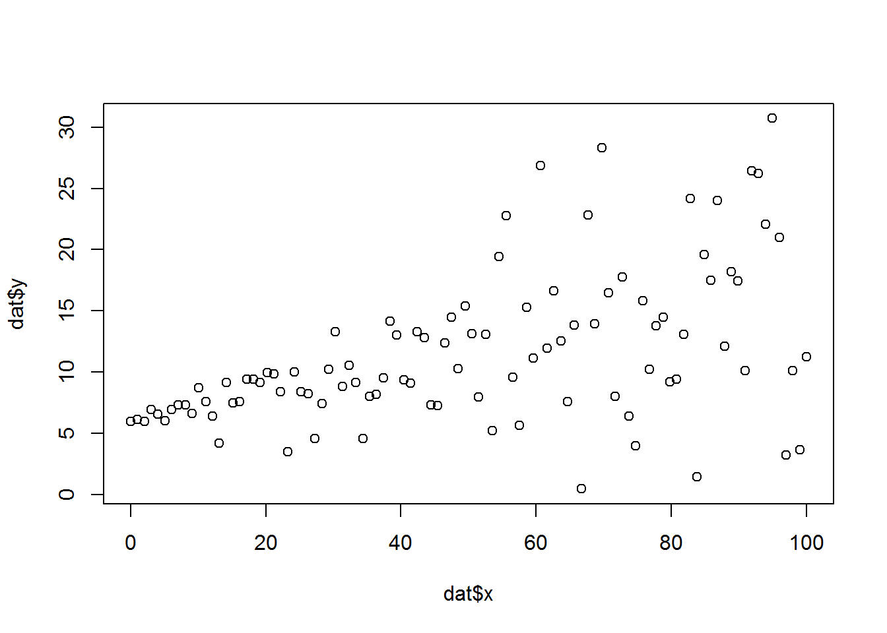
# add SE option to statement
# note that summary gives confidence intervals but not standard errors
summary(rq(y~x, tau=c(0.1, 0.5, 0.9)))##
## Call: rq(formula = y ~ x, tau = c(0.1, 0.5, 0.9))
##
## tau: [1] 0.1
##
## Coefficients:
## coefficients lower bd upper bd
## (Intercept) 5.99747 3.86295 6.15738
## x -0.02367 -0.02906 0.03772
##
## Call: rq(formula = y ~ x, tau = c(0.1, 0.5, 0.9))
##
## tau: [1] 0.5
##
## Coefficients:
## coefficients lower bd upper bd
## (Intercept) 6.02969 5.70159 6.52311
## x 0.10715 0.07854 0.13329
##
## Call: rq(formula = y ~ x, tau = c(0.1, 0.5, 0.9))
##
## tau: [1] 0.9
##
## Coefficients:
## coefficients lower bd upper bd
## (Intercept) 5.97238 5.89246 6.63652
## x 0.22240 0.21226 0.25554# add SE option to statement
#iid - assumes iid distribution
plot(summary(rq(y~x, tau=c(0.1, 0.5, 0.9)), se="iid"))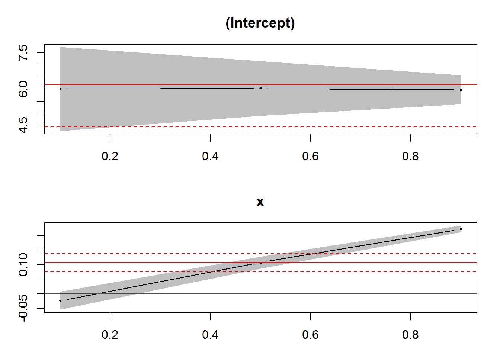
#nid - assumes non-identical conditional distribution
plot(summary(rq(y~x, tau=c(0.1, 0.5, 0.9)), se="nid"))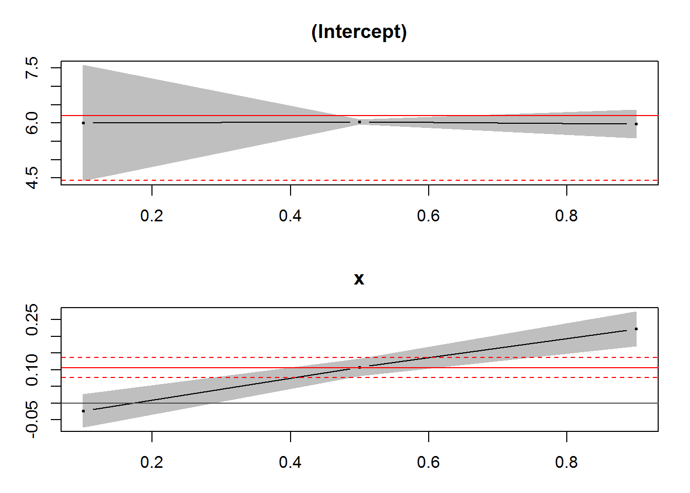
#boot - no distribution assumption. Note that this is most similar to the nid, which is the appropriate choice for data with this distribution
plot(summary(rq(y~x, tau=c(0.1, 0.5, 0.9)), se="boot"))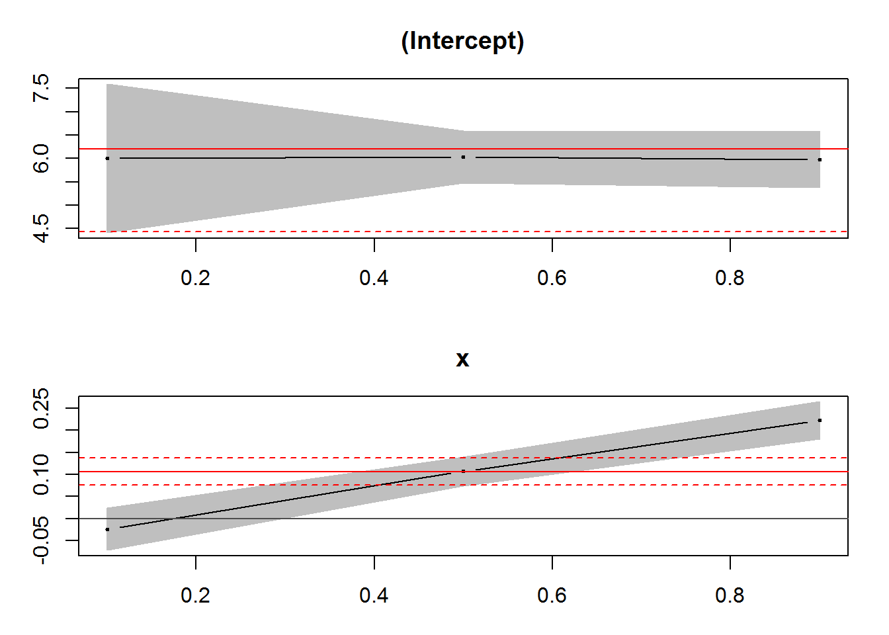
Evaluating Goodness-of-Fit
Because quantile regression models are fit based on minimizing the absolute values of weighted residuals, as opposed to minimizing the sum of squared errors, the R2 is not an applicable goodness-of-fit metric. A couple of methods are available for evaluating goodness-of-fit, but these are not tests, per-se. Rather, they provide a means for comparing model fit among nested models. Of note, because different conditional quantile models are modeling different responses, these tests cannot be used to compare GOF among quantiles.
####
#### Evaluating Goodness-of-Fit
####
# generate data with non-constant variance (adapted from https://data.library.virginia.edu/getting-started-with-quantile-regression/)
x <- seq(0,100,length.out = 100) # independent variable
varfunc <- 0.1 + 0.1*x # non-constant variance
int <- 6 # true intercept
slope <- 0.1 # true slope
set.seed(1) # make the next line reproducible
e <- rnorm(100,mean = 0, sd = varfunc) # normal random error with non-constant variance
y <- int + slope*x + e # dependent variable
dat <- data.frame(x,y) # make into datafame
plot(dat$x, dat$y) # plot dataR1 Metric
The R1 metric is calculated as one minus the ratio of the sum of absolute weighted residuals for the fitted model to the sum of absolute weighted residuals for the null model. As with an R2, values range between 0 and 1. However, the R1 metric will always be smaller than the R2 metric.
Koenker, R., Machado, J.A.F. 1999. Goodness of fit and related inference processes for quantile regression. Journal of the American Statistical Association. 94(448):1296-1310.
#### R1 metric
# fitted model for median quantile
fitmod5 <- rq(y ~ x, tau = .5, data = dat)
# null model for median quantile
nullmod5<-rq(y~1, data=dat, tau=0.5)
#weighted residuals
nullres5<-resid(nullmod5)
fitres5 <- resid(fitmod5)
# calculate R1 metric as 1 minus ratio of summed absolute residuals from fitted and null model
1-(sum(abs(fitres5))/sum(abs(nullres5)))## [1] 0.1842132# or more simply, pull these sums from the model object
1 - fitmod5$rho/nullmod5$rho## [1] 0.1842132# compare to R2
summary(lm(y ~ x, data = dat))$r.squared## [1] 0.2520498# plot data with mean and median regression lines. note in this case they are the same line but goodness of fit differs (QR < OLS)
plot(dat$x, dat$y)
abline(fitmod5, col="red")
abline(lm(y ~ x, data = dat), col="blue")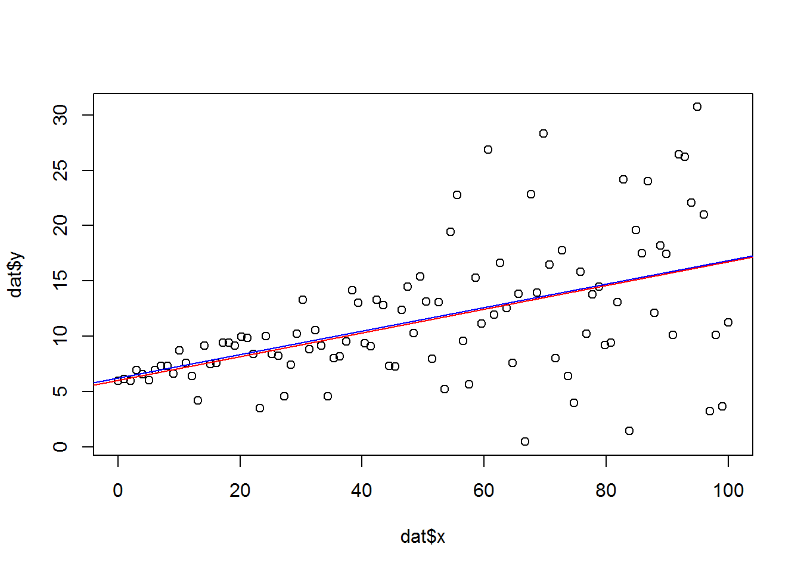
Difference in AIC from null model
Another option for assessing relative model goodness-of-fit is to compare AIC values of the fitted model to the null model. Typically, an AIC difference > 10 suggests the model has some explanatory power.
#### difference in AIC
# delta AIC method for QR model
AIC(nullmod5)[1]-AIC(fitmod5)[1]## [1] 38.72044#compare to OLS
AIC(lm(y ~ 1, data = dat))[1]-AIC(lm(y ~ x, data = dat))[1]## [1] 27.04189# notice the dAIC for the QR model vs. null is larger than that for the OLS vs. nullA side note on likelihood in quantile regression
From Koeneker: http://www.econ.uiuc.edu/~roger/research/rq/FAQ
FAQ question: In quantreg of R package, rq.object can compute AIC (Akaile’s An Information Criterion); AIC=-2L/n+2k/n ,where L is log-likelihood, k represents the number of parameters in the model ,n is the number of observations. We know that likelihood is based on distribution, but quantile regression can not assume specific distribution, thus….Why can an rq.object compute AIC?
FAQ answer: This is discussed many places in the literature. Yes, it is not a “real” likelihood, only a pseudo likelihood, but then the Gaussian likelihood is usually not a real likelihood either most of the time….
Cumulative sum method
A third goodness of fit test was proposed that is based on the cumulative sum of the gradient vector and is available in the Qtools package, but it is not particularly well-documented. The aim is to minimize the test statistic, but it is not clear what test statistic qualifies as a ‘good’ fit. This test is also computationally expensive.
He XM, Zhu LX. A lack-of-fit test for quantile regression. Journal of the American Statistical Association (2003);98:1013-1022.
# cumulative sum of the gradient vector (eigenvector) (Qtools package)
# specify QR model object, significance level, B= number of montecarlo samples
GOFTest(fitmod5, alpha = 0.05, B = 1000)## Goodness-of-fit test for quantile regression based on the cusum process
## Quantile 0.5: Test statistic = 0.0323; p-value = 0.287#try with dataset with smaller variance
x <- seq(0,100,length.out = 100) # independent variable
varfunc <- 0.1 + 0.01*x # non-constant variance
int <- 6 # true intercept
slope <- 0.1 # true slope
set.seed(1) # make the next line reproducible
e <- rnorm(100 ,mean = 0, sd = varfunc) # normal random error with non-constant variance
y <- int + slope*x + e # dependent variable
dat <- data.frame(x,y) # make into datafame
plot(x,y)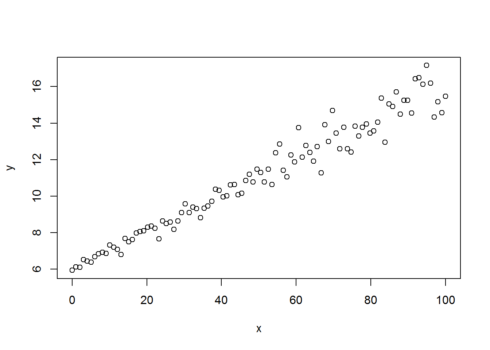
fitmod5b <- rq(y ~ x, tau = .5, data = dat)
GOFTest(fitmod5b, alpha = 0.05, B = 1000)## Goodness-of-fit test for quantile regression based on the cusum process
## Quantile 0.5: Test statistic = 0.0139; p-value = 0.716#try with dataset with smaller variance and larger sample size
x <- seq(0,1000,length.out = 1000) # independent variable
varfunc <- 0.1 + 0.01*x # non-constant variance
int <- 6 # true intercept
slope <- 0.1 # true slope
set.seed(1) # make the next line reproducible
e <- rnorm(1000 ,mean = 0, sd = varfunc) # normal random error with non-constant variance
y <- int + slope*x + e # dependent variable
dat <- data.frame(x,y) # make into datafame
plot(x,y)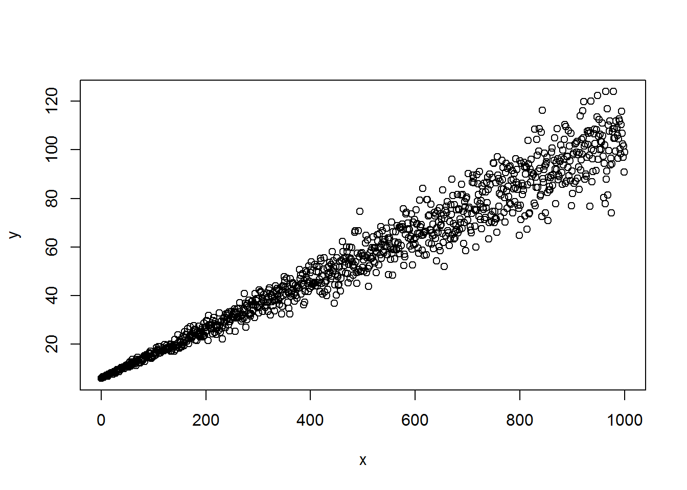
fitmod5c <- rq(y ~ x, tau = .5, data = dat)
GOFTest(fitmod5c, alpha = 0.05, B = 1000)## Goodness-of-fit test for quantile regression based on the cusum process
## Quantile 0.5: Test statistic = 0.068; p-value = 0.076Plotting Quantile Regression in ggplot
####
#### Plotting Quantile Regression in ggplot
####
data(engel)
m <- ggplot(engel, aes(income, foodexp)) + geom_point()
m + geom_quantile()
m + geom_quantile(quantiles = 0.5)
q10 <- seq(0.05, 0.95, by = 0.05)
m + geom_quantile(aes(colour = ..quantile..),quantiles = q10)
Other Types of Quantile Regression
Non-linear Quantile Regression
# Nonlinear Quantile Regression (adapted from: https://rpubs.com/MarkusLoew/10676)
data(Mammals) #Observations on the maximal running speed of mammal species and their body mass.
attach(Mammals)
x <- log(weight)
y <- log(speed)
mamdat<-as.data.frame(cbind(x,y))
# plot data
plot(x,y, xlab="Weight in log(Kg)", ylab="Speed in log(Km/hour)")
Start with OLS non-linear regression
# start with just a simple quadratic approach
# y ~ a * x^2 + b * x + c
my.equation <- y ~ a * x^2 + b * x + c
# fit the equation to the data via "non-linear least squares"
# choose some good starting values for parameter estimation
nls.fit <- nls(my.equation,
data = mamdat,
start = list(a = 2, b = 3, c = 5))
# look at the result
summary(nls.fit)##
## Formula: y ~ a * x^2 + b * x + c
##
## Parameters:
## Estimate Std. Error t value Pr(>|t|)
## a -0.024342 0.005389 -4.517 1.66e-05 ***
## b 0.252607 0.026214 9.636 4.37e-16 ***
## c 3.341114 0.090890 36.760 < 2e-16 ***
## ---
## Signif. codes: 0 '***' 0.001 '**' 0.01 '*' 0.05 '.' 0.1 ' ' 1
##
## Residual standard error: 0.6343 on 104 degrees of freedom
##
## Number of iterations to convergence: 1
## Achieved convergence tolerance: 1.354e-07# create a dummy range of that we use to predict speed from our fitted model
predict_range <- data.frame(x = seq(-5, 9, length = 250))
# calculate for each x-range value the corresponding y-range
my.line <- within(predict_range, y <- predict(nls.fit, newdata = predict_range))
# add the line to the existing graph
# This line represents the "mean" fit, no quantile regression involved
# plot data
plot(x,y, xlab="Weight in log(Kg)", ylab="Speed in log(Km/hour)")
lines(y ~ x, data = my.line, col = "red")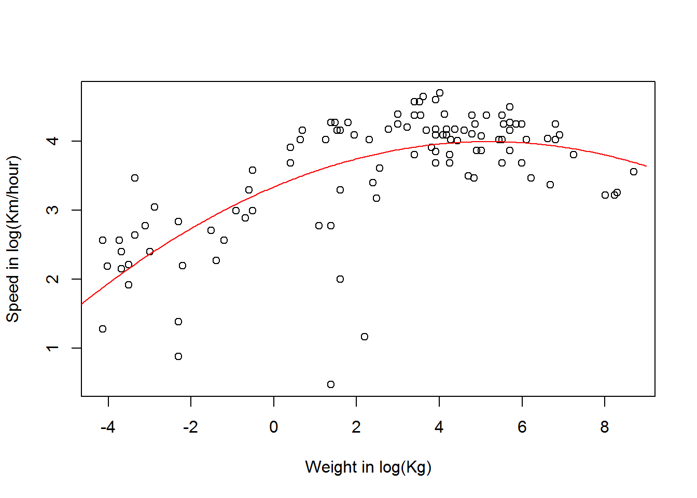
Now try with quantile regression
# Non-linear quantile regression
# aiming for the upper 99% quantile
my.rq <- nlrq(my.equation,
data = mamdat,
start = list(a = 2, b = 2, c = 5),
tau = .99)
summary(my.rq)##
## Call: nlrq(formula = my.equation, data = mamdat, start = list(a = 2,
## b = 2, c = 5), tau = 0.99, control = list(maxiter = 100,
## k = 2, InitialStepSize = 1, big = 1e+20, eps = 1e-07, beta = 0.97),
## trace = FALSE)
##
## tau: [1] 0.99
##
## Coefficients:
## Value Std. Error t value Pr(>|t|)
## a -0.03159 0.00605 -5.22479 0.00000
## b 0.18846 0.04341 4.34100 0.00003
## c 4.45252 0.14018 31.76311 0.00000# calculating the values from the model
my.line95 <- within(predict_range,
y <- predict(my.rq,
newdata = predict_range))
plot(x,y, xlab="Weight in log(Kg)", ylab="Speed in log(Km/hour)")
lines(y ~ x, data = my.line, col = "red")
lines(y ~ x, data = my.line95, col = "blue")
Count Data
Need to create an artificial continuous distribution that approximates the discrete count data.
The classic way to do this is to artificial smooth (jitter) the data by adding random error
Machado JAF, Santos Silva JMC. Quantiles for counts. Journal of the American Statistical Association. 2005;100(472):1226-37.
In this case, the response is log-transformed to achieve the continuous distribution
# Esterase data
data(esterase)
# Fit quantiles 0.25 and 0.75 - number of dithered samples
fit1 <- rq.counts(Count ~ Esterase, tau = 0.25, data = esterase)
coef(fit1)## (Intercept) Esterase
## 4.19869934 0.05324318fit2 <- rq.counts(Count ~ Esterase, tau = 0.75, data = esterase)
coef(fit2)## (Intercept) Esterase
## 4.85205309 0.04943474# Plot
with(esterase, plot(Count ~ Esterase))
lines(esterase$Esterase, fit1$fitted.values, col = "blue")
lines(esterase$Esterase, fit2$fitted.values, col = "red")
legend(8, 1000, lty = c(1,1), col = c("blue", "red"), legend = c("tau = 0.25","tau = 0.75"))
Summary
Advantages of Quantile Regression
allows a comprehensive look at the data – identify limiting factors, floors, ceilings
robust to outliers
is distribution agnostic
Disadvantages of Quantile Regression:
computationally less-efficient than OLS
needs sufficient data
non-traditional goodness-of-fit metrics make communication of model fit challenging
Resources
Quantreg package: https://cran.r-project.org/web/packages/quantreg/quantreg.pdf
A gentle introduction to quantile regression (Cade and Noon 2003): https://pdfs.semanticscholar.org/8c0d/c7f7362479553ac7747b66933a425b0840c8.pdf
Quantile Regression: Theory and Applications (Davino et al.) http://domenicovistocco.it/conferma-associato/pubblicazioni/7-davino-furno-vistocco-bookQR-wiley-2013.pdf
Quantile Regression (Hao and Naiman 2007) http://methods.sagepub.com/book/quantile-regression
Advanced Topics/Packages in R
Mixed Effects Modeling : https://cran.r-project.org/web/packages/lqmm/lqmm.pdf
Random Forests : https://cran.r-project.org/web/packages/quantregForest/quantregForest.pdf
Bayesian Quantile Regression : https://cran.r-project.org/web/packages/bayesQR/bayesQR.pdf